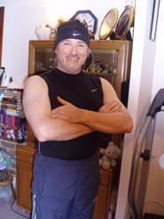
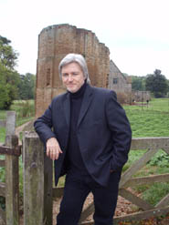
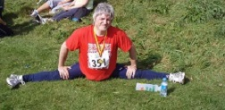
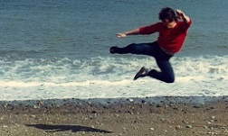
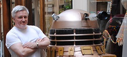
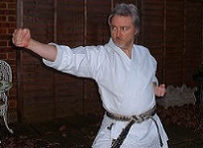

I was born in the 'Irish ghetto' of northwest London, of Irish parents, and grew up in Slough, famous for the Poet Laureate's words (addressed to the Luftwaffe): "Come friendly bombs and drop on Slough/It isn't fit for humans now."
When I was five, my mother took me to the local library to join up. There, I found a book about a little boy who hid behind wooden crates next to a launch pad, sneaked on board a rocket, and flew to the moon. This was the time, on British TV, of Fireball XL5, the first Dr Who - yes, I watched the very first episode in November 63, and the dark, strange atmosphere is with me still - and surreal offerings like Torchy, the Battery Boy. Aged six, confined to bed with simultaneous mumps and measles, I read the first Dr Strange and Spider-Man, with Steve Ditko's quirky, compelling artwork.
Within a year or two I was reading the 'juveniles' (as publishers used to call them) of Robert A. Heinlein and Andre Norton, two very different writers, dragging apart the boundaries of my worldview in opposite directions.
Aged ten, I discovered adult SF, starting with Clifford Simak's Time is the Simplest Thing. The book begins with a robot crawling across a grey plain, discovering an alien who broadcasts this thought to the robot's linked-in human operator on Earth: "I trade with you my mind." What an opening.
What other scenes struck me? I remember the first human being in a million years to see a sunrise, peeking out from the enclosed city of Diaspar; Paul Atreides tied up in the back of the ornithopter flying through the sandstorm over the desert of Arrakis; and the amnesiac Corwin, driving with his unremembered brother Random in an altering car as they shifted between realities on the road to Amber.
Outside of books, well... I was overweight, asthmatic, and everyone else at Slough Grammar School was taller than me. The least athletic kids played hockey rather than football or rugby. The least athletic of the least athletic played in goal, meaning that an asthmatic kid, wearing a cotton sports jersey and shorts - no extra layers allowed - was required to stand still for hours at a time in chilly British winters.
(Aside for US readers: grammar schools are high schools for the abler students, requiring you to pass an "Eleven Plus" entrance exam, aged 11. Slough, then in the county of Buckinghamshire, was one of the last to retain that system. Grammar schools still exist, but most kids attend all-ability 'comprehensive schools'. The old system was great provided you passed the exam; too bad if you didn't. In more obvious Britspeak, hockey means field hockey, and football means soccer.)
But our school had an arrangement with the local college, and in the fifth form (in the old way of designating school years), aged fifteen, I went along to my first judo lesson, taught by a 70-year-old gentleman called Alf; and it changed my life. In the following year, the instructor was a weightlifting ex-commando called Jack Gayson (not sure of that spelling), and that's when things really kicked off. While continuing in judo (and Jack's after-lesson close-quarter-combat training with the keenest students - fighting blindfold, or with rubber knives, or striking-and-grappling combined) I took up wu shu kwan, a hard style of kung fu (now referred to as Chinese kickboxing).
At Birmingham University in 1975 I switched to shotokan karate (and became the club captain), training under Terry Vaughan, John Bentley and their instructor, Cyril Cummins. That's when I really got into weight training and running. In the 80s I trained in Wales with Paul Watson for a year or two, then in Eastleigh, Hampshire under Mick Dewey and Dave Hinks for a few years, and then in Kent with Tony Gavin. In '89 I began working for Europe's largest software house, which meant commuting to London; and that allowed me to train at Enoeda Sensei's famous Marshall Street dojo for five or six years.
That was a period when I spent at least four and a half hours commuting every day (or occasionally was away from home), while fitting in my writing and martial arts training. But once you're in your thirties, you have to realize that it's time to take the writing seriously. (Most first-time novelists are aged around 38, having spent fifteen years to twenty years learning the craft. Like the martial arts, you have to be in it for the long haul. If you begin with novels and not short stories, realize that the first novel you get published is likely to be the fifth novel you write.)
I sold my first short story to Interzone in 1992.
To see what I produced since then, check out the the books and short story pages here on the website. But I'd like to say something about finding the ideal place to work every day. I wrote To Hold Infinity and Paradox while travelling on trains. The first drafts, at least. You work where you can, not where you would like. And you write because you must.
In the martial arts more recently, since early 2011 I've been training again (after 30 years away!) under Paul Watson, 6th dan, in his highly practical, effective and "rustic" version of shotokan. Before that, I trained with my good friend Mick Foster in Kent. Over the decades, I've trained on courses with the well-known names -- in shotokan, Dave Hazard, Andy Sherry, Terry O'Neill, Bob Poynton, Peter Manning, Tanaka, Tabata and many others -- and in other arts, Dan Inosanto (jeet kune do/escrima), Eyal Yanilov (krav maga), Bill Wallace (kickboxing). And I've visited fight gyms and dojos, and always been made welcome (though you never know, when you walk in the door, just what's waiting: gentlemen or psychos). And MMA is brilliant: I started altering my training as soon as I watched Marco Ruas's training tapes, back in the 90s; but that's another story.
As for computers, I wrote my first programs in 1976, in BASIC, on a PDP11 minicomputer and a Univac mainframe; while in the financial IT arena, my first language was RPG II. That's the one with the real logic cycle, none of yer namby-pamby later RPGs. (And there was no such thing as a mouse, unless it was furry and squeaked.) These days, if I were to write code it would be Java, and I would design the heck out of the system using UML, incorporating design patterns. Given half a chance, I'll specify the operations formally, using OCL; and if you give me total freedom, I'll specify it in Z (i.e. symbolic logic and set theory) and mathematically prove the design before coding. Some of the software engineers that I've taught absolutely love this approach. They're the ones who, if their software fails, have to live with the fact that someone has probably died.
Less technically, I've taught business analysts to use lightweight UML, and focused on soft skills, because I'm as interested in psychology as software. During one course, besides teaching the subject in question, I used hypnosis to cure a delegate's stuttering. It's nice to give more than expected. Elsewhere, I've cured phobias and addictions, and that special fear known as writer's block.
By the way, I loved my IT career... although when I started in the industry, the term "IT" did not exist - that appeared in the mid-80s. I worked in IT departments mainly in the finance sector, then spent over a decade in that software house in a range of consulting roles, and became a trainer, which combines psychology with software engineering and a touch of showbiz. Perfect for me. I've taught software engineering and business analysis all over the place - often in the States and Switzerland - and had great fun with it. I still teach software engineering to a small number of highly select clients, and I even completed my long-postponed grad work at Oxford University. I seem to be enjoying the best of two worlds, or possibly three: computers, karate and books.
For someone who remembers the little boy hiding beside the launch pad, and the alien offering to trade minds, what else could I do?